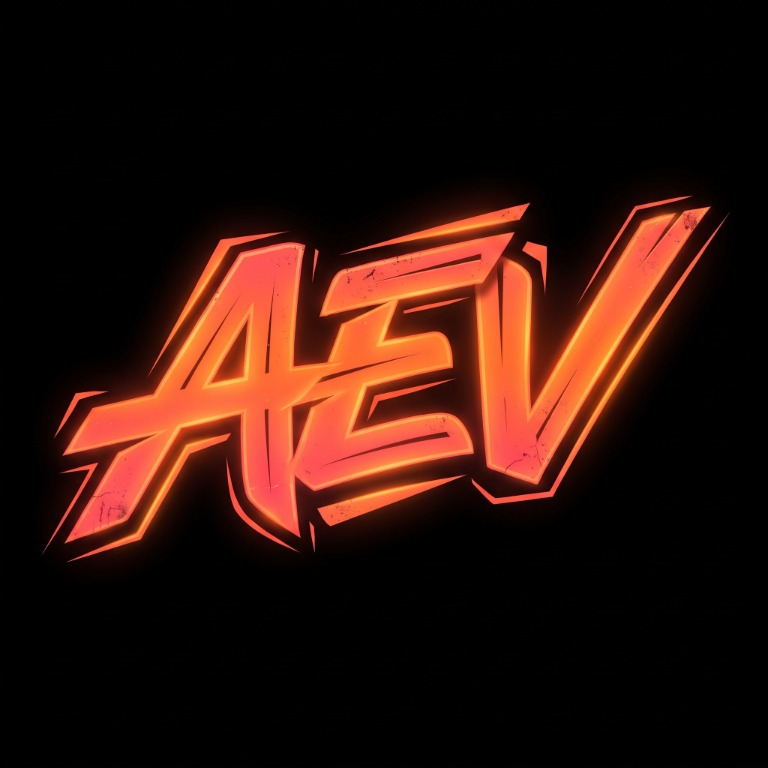

AEV · CADA DICIEMBRE
Adoradores
en Espíritu
y en verdad.
Un encuentro juvenil con música, palabra, creatividad y comunidad. Una generación que celebra a Jesús con todo lo que es.
Sigue a AEV
01 / LA EXPERIENCIA
MÁS QUE UN EVENTO
Una noche para recordar.
AEV nace para reunir a jóvenes de Ayacucho en un espacio alegre, creativo y centrado en Dios. Cada diciembre abrimos las puertas a una experiencia que combina conciertos, sorteos, talleres y momentos que nos conectan.
01Conciertos y celebración
02Talleres para crear y aprender
03Sorteos y sorpresas
02 / SONIDO Y MOVIMIENTO
DESDE EL CANAL AEV
Vívelo otra vez.
03 / AEV EN IMÁGENES
Así se vivió
la última edición.
Personas, música, creatividad y una comunidad que se reúne para adorar.


NOS VEMOS EN DICIEMBRE